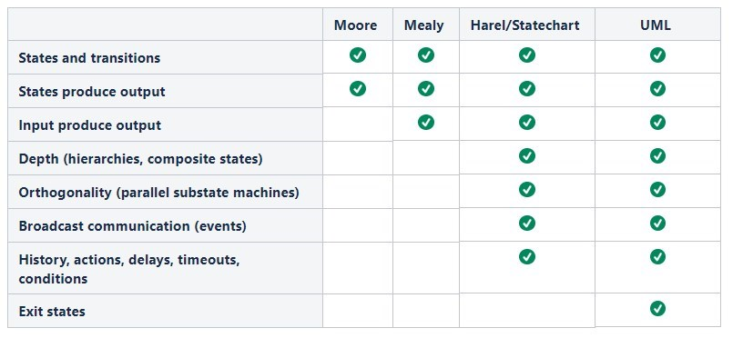
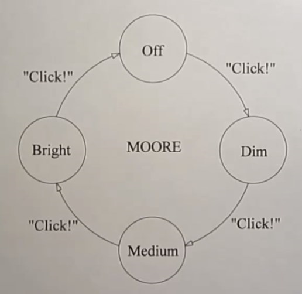
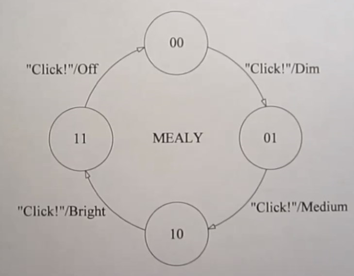

Introduction to Finite State Machines
by André Jaenisch and Vladimir Zaikin
Mercedes-Benz.io GmbH, 12th November 2018
What is a Finite State Machine?
- a mathematical description (yes! Math üò®)
- of the relationships between a finite number of states,
- and a finite number of events
- that can cause transitions between states.
Problems that FSM tries to solve
Problems that FSM tries to solve
- System has hidden (undiscovered) states
building FSM helps all the states to be explored
Example: "button clicked", "results shown" (UX), "waiting", "loading", "error", "idle" (Dev)
- Complex behavior is coupled to component
component logic can be more focused on how things are executed rather than why
FSM makes easier to make changes to the behavior
with FSM behavior can be tested independently of the component
- Lots of if..else / switches etc. in the code
it’s easier to understand a FSM than many other forms of code.
Problems of Finite State Machines
- Maintain large number of states, a lot of them with identical transitions.
sometimes complexity of a traditional FSM tends to grow much faster than the complexity of the system it describes.
- State explosion.
adding a new aspect to the state machine multiplies the number of states that need to be modeled, and creates a disproportionately high number of transitions.
- Complex math theory background and steep learning curve.
- Lack of handy "helper" features.
Example
A user interface with 2 states: valid and invalid and a state machine that describes this behavior.

The state machine would need to know that a component is enabled or disabled. This will square the number of states of your machine.

Adding a flag to indicate that user has made a change to the field, we end up with total of 8 states.

Statecharts to the rescue
- extension to FSM
- solve mentioned problems by introducing:
Actions
side-effects that need to happen while transiting between states
Parallel states
allow modeling independent states, running in parallel
Hierarchies
so you can nest state machines inside each other
Guards
allow conditional transitions
Example
"State explosion" can be solved by introducing parallel states

Can be further optimized by hierarchies (valid/invalid only makes sense if the field has been modified)

Difference between State Management and FSM
How is Flux designed?
Flux consists of
- dispatcher
- stores
- actions
- views
You see, it is more focused on
- the implementation of
- the state of (a part of) an application (hold in the store) at any given time,
- and the payload of an action to
- dispatch a change in the state
- which updates its output.
Types of Finite State Machines
Overview
Moore
produces output based on the state only
A function with current state as an argument.
Example: lamp with intensity switch, traffic lights, elevator.
Mealy
produce output based on state and input
A function with current state and some input as arguments.
Example: lamp with intensity switch, vending machine.
Overview
statechart = state diagram (such as Moore / Mealy) + set of handy features
UML state machines has one additional feature "Exit state"
Machine-readable expression of a Finite State Machine
SCXML
There is a standard at W3C to describe State Charts.
It's called SCXML (of course, it's XML). Luckily they designed it as general-purpose event-based state machine language.
So you can do a lot of interesting things with it:
- Describing the dialogue flow of a chatbot
- Use it as voice application meta-language
- Model a microwave
To give you an idea of how it looks like, take a peak into Apache Commons SCXML
SCION
Actually quite readable.
If you want to get your hands dirty, explore SCION.
They're offering a JavaScript framework (doh!) which is built with JSON (surprise!).
For our case it would look like this:
{
"id": "on"
"states": [
{
"id": "idle"
},
{
"id": "cooking"
}
]
}
Not that much different, eh?
Why use a XML standard?
Because it is a standard.
That is, you have a well-defined format which encourages interoperability.
So if one tool outputs SCXML, another one should be able to read it.
XML allows for more meta-information than JSON, but is more verbose.
You can exchange cross-programming-language this way.
Demo ü§û
Further reading
If you are interested now and want to learn more, check out these resources:
Credits
Image credits
- Flickr: mariquita en mi dedo :)))) by jacinta lluch valero (CC BY-SA 2.0)
- Flickr: Flux Capacitor by nate bolt (CC BY-SA 2.0)
- flux simple f8 diagram with client action by Kyle Davis (BSD)
- Wikimedia Commons: Use JSON server kitty by MaxSem (CC BY 2.0)
- statecharts.github.io: various illustrations by Erik Mogensen
{kind=link}
Thanks for listening